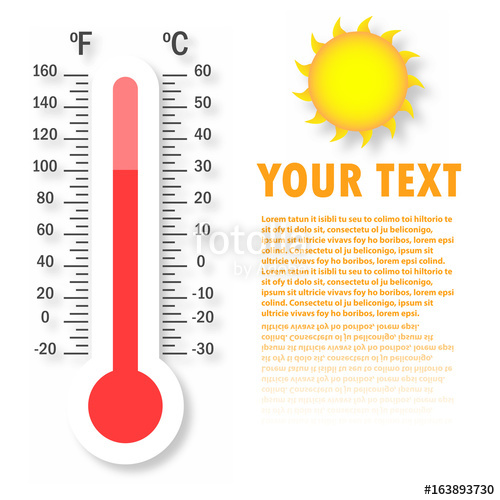

W3Schools is a popular web site for learning web technologies online. Content includes tutorials and references relating to HTML, CSS, JavaScript, JSON, PHP, AngularJS, SQL, Bootstrap, Node.js, jQuery, XQuery, AJAX, and XML. It receives more than 10 million unique visitors monthly.
Created in 1998, its name is derived W3Schools is a popular web site for learning web technologies online. Content includes tutorials and references relating to HTML, CSS, JavaScript, JSON, PHP, AngularJS, SQL, Bootstrap, Node.js, jQuery, XQuery, AJAX, and XML. It receives more than 10 million unique visitors monthly.